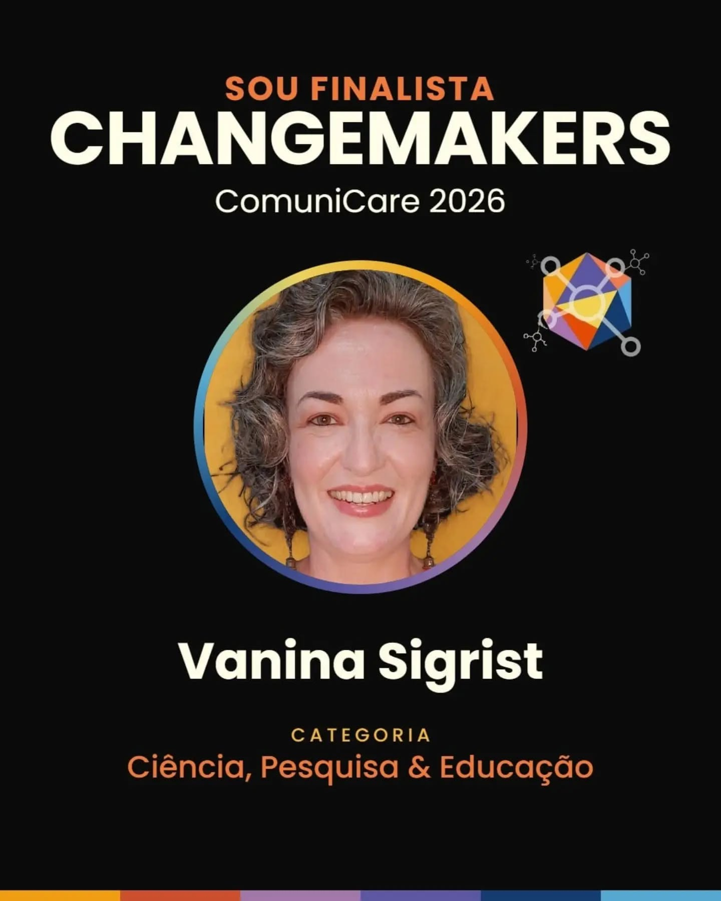

Mural de Avisos
Fique por dentro de todos os comunicados oficiais da coordenação e dos professores.
Vanina Sigrist — Finalista em Ciência, Pesquisa & Educação
Amo ensinar e aprender em sala de aula, e essa dedicação rendeu frutos: estou entre os finalistas do ChangeMakers ComuniCare 2026 na categoria Ciência, Pesquisa & Educação!
Se sou ou já fui sua professora ou se nossos caminhos se cruzaram na educação em algum momento e isso fez sentido para você, escolha meu nome na votação popular. Eu agradeço por cada voto de confiança que me faz uma professora mais forte!

Entrega do Trabalho Prático de Desenvolvimento Web I
Lembrete: O envio do código fonte via repositório no GitHub deve ser feito até a próxima sexta-feira às 23h59. Certifiquem-se de que o layout esteja totalmente responsivo e com os arquivos organizados corretamente.
Semana Acadêmica de Tecnologia - Inscrições Abertas
As inscrições para as palestras e minicursos da nossa Semana Acadêmica já estão abertas. Haverá emissão de certificados válidos para horas complementares para todos os participantes que registrarem presença.
Atualização no Acervo de E-books de Banco de Dados
A biblioteca virtual da instituição disponibilizou novos títulos voltados para modelagem avançada e otimização de consultas SQL. O acesso é gratuito para todos os alunos matriculados usando as credenciais institucionais.